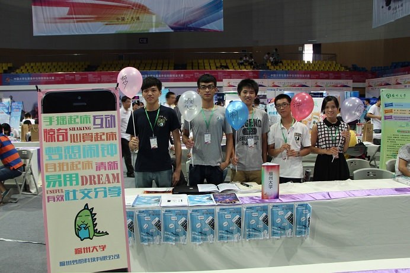
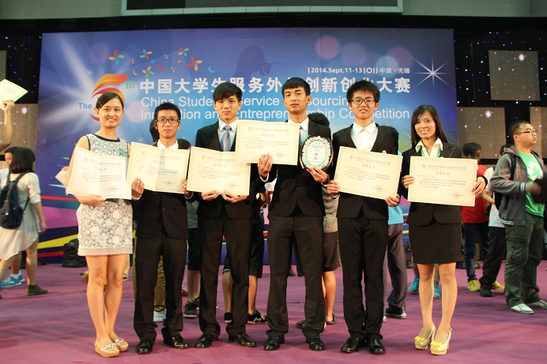

2015-3-14
西二在线
2014年9月11-13日，由教育部、商务部和无锡市人民政府主办的第五届中国大学生服务外包创新创业大赛决赛在无锡江南大学成功举办。
在孙岚、傅仰耿、王一蕾、吴英杰和苏世彬等老师组成教练团队的指导下，我校由队长王洪根和队员刘莞玲、王炳阳、林世雄、黄景峰组成的梦想科技团队经过参赛作品布展、决赛答辩的激烈角逐，凭借项目《梦想闹钟》的高创新性、强实用性、广阔的市场前景、良好的商业模式等特点以及代表队决赛答辩的优异表现，得到了评委老师和在场其他参赛队伍的充分肯定，最终获得本届大赛创业实践组一等奖的好成绩（共评出一等奖6名）。这是我校首次获得该项赛事一等奖。
本届大赛共有来自清华大学、上海交通大学、四川大学、中南大学、福州大学、台湾大学和香港理工大学等两岸三地132所高校的200支代表队参赛队伍从初赛中的233所高校近499支团队支参赛队脱颖而出进入决赛。
中国大学生服务外包创新创业大赛是由教育部、商务部和无锡市人民政府为进一步创新和加快服务外包人才培养工作联合举办的，是一项被各大知名高校和企业高度认可的赛事。大赛紧贴服务外包、创新创业、信息技术主题。以应用为导向，加强产学互动，旨在引导大学生关注现代服务产业，吸引企业关注学生创新创业，促进高校教育改革适应战略性新兴产业发展需求，努力打造具有国际影响力的大学生服务外包创新创业展示平台。大赛面向全国全日制本科高校，参赛队员为在校本科生或研究生，赛题分为三类，包括企业命题组、自由命题组和创业实践组，各高校在同类型赛题组仅限一个参赛队报名。我校今年派出3支代表队分别参加第五届中国大学生服务外包创新创业大赛三类题型的比赛。
 